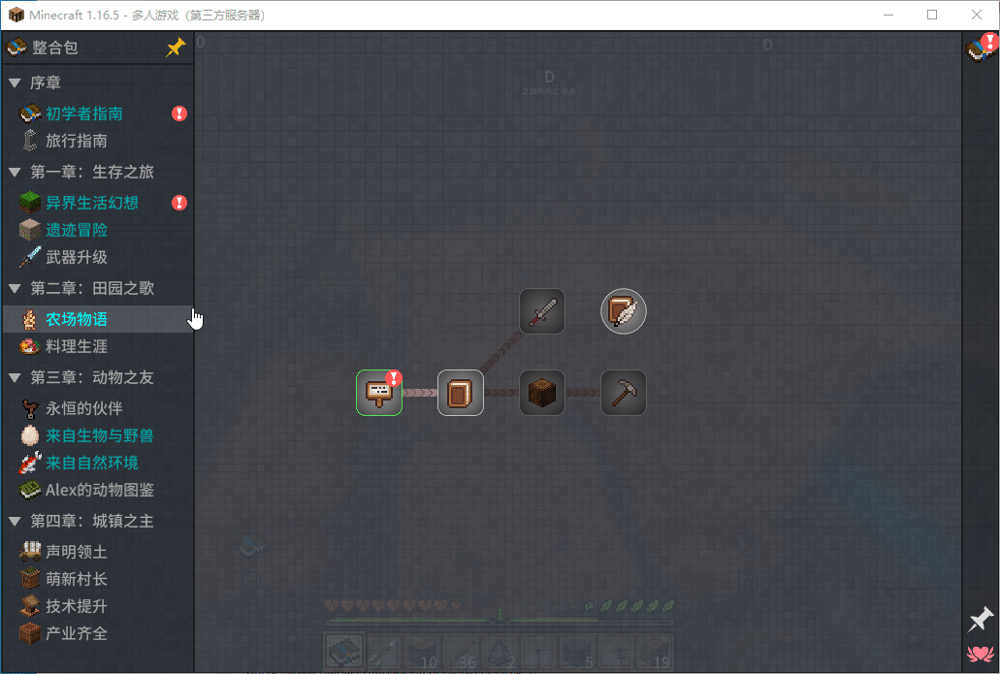

服务器的运营模式可能会变更（包括开放时间，连接方式），请定期留意此页面的更新。
整合包作者原视频：showLink
这应该算是在 MC 中为数不多的高度汉化整合包了，不仅优化了地形生成，还集成了惊人的 198 个 Mod，改变和新增了很多玩法，如果不知道怎么使用，可以查看物品栏中的任务书，很多物品和生物在里面都有详细的中文介绍，还有一些 Mod 的操作指南，非常详细。在游戏中还附带了多个材质和基于 Optifine（高清修复）的光影，玩家可根据需求自行调整。
不过这个整合包的缺点很明显，就是资源占用大。即使是将算力集中到服务器上的多人游戏也会占用至少 3GB 的内存，而单人游戏就更离谱了，一些中低端配置的设备会经常出现卡顿，CPU 占用直接去到 99%，因此，选择一个服务器是更加明智的选择。

更真实的地形
简明的任务书
焕然一新的启动界面
BugTea
QQ：757169500 / 2896431618
BiliBili：513308856
游戏内角色名：BUGTeas / BUGTeaSecond
1.16.5，整合包版本 1.3（需要专用客户端，请勿在启动器下载）
7*24 小时（每天凌晨 3:00 自动重启备份）
使用虚拟网络软件“Tailscale”，并向我获取服务器分享链接，将服务器添加到虚拟网和游戏中。教程：使用 Tailscale 连接到服务器
仅限 LittleSkin 外置登录，正版和离线勿扰 外置认证设置指南 (LittleSkin 皮肤站)
游戏模式(gamemode)：生存(survival)
难度(difficulty)：正常(normal)
模拟距离(view-distance)：12
首先需要下载 Java 11.0.12 以及专用的游戏自解压包，在官方 KOOK、阿里云盘或基友私群群文件的“异界生活幻想”文件夹下就可以找到这些文件。
然后安装 Java 11.0.12，打开“jdk-11.0.12_windows-x64_bin.exe”程序开始安装，安装教程见：官方 JDK 11 及以上版本安装指南，如果有免安装版或 OpenJDK 的需求，可参考教程：下载和安装 Java，至于 JDK 还是 JRE 都无所谓，不过千万不要忘了选 11.0.12 版本哦！
接下来解压游戏本体，需要注意：千万不要直接双击在程序内解压，否则解压出来的文件不完整！需要安装 7-Zip 压缩软件（没办法，其他软件解压也不完整。。。）访问官网 showLink 下载 7-Zip 压缩软件，软件很小，安装后不到 6 Mb。
下载表格中有几个选项，对应你的系统类型，可以此电脑右键属性查看。

然后将其安装：
之后在自解压文件处右键，选择“7-Zip”，然后将其提取。
游戏本体解压得到以下文件：
正常解压后全选上图文件后的文件大小和数量，可以对比解压是否完整
你可以使用其内置的 HMCL 启动器，但是它的版本太旧，不过也可以使用自己的启动器来代替，只需要导入这里面的“.minecraft”文件夹就行。
硬盘安装和配置 HMCL：HMCL 快速入门 (安装、添加游戏和账户)
U盘免安装 HMCL：将 HMCL 放在U盘上，插上U盘就能开van
在开始游戏之前需要在启动器中手动将 Java 版本设置为 11.0.12，内存分配默认是8GB，需要根据电脑实际情况进行调整，最好不要超过电脑内存的一半。HMCL 启动器进入游戏设置按下图配置：
在启动器中点击启动游戏，稍等片刻游戏窗口弹出，由于是大型整合包，近 200 个 Mod 的加载会使得游戏启动需要 5 分钟左右，如果出现未响应等情况不必担心，建议将系统中暂时不需要使用的软件关闭以释放内存，启动完成进入主界面：
在进入服务器的时候 Mod 会再次加载，因此依旧会在连接过程中出现卡顿：
不过也只耗时 1 分钟左右，在连接成功后方可开始您的「异界生活幻想」了：
每次启动之前 HMCL 启动器都会抛出如下警告：
经过整合包作者测试与 Mod 匹配的 Java 版本就是 11.0.12，所以这其实是 HMCL 的误判，只需要在游戏设置中将它关闭即可。
在游戏设置底部找到“修改高级设置”，勾选“不检查 JVM 与游戏的兼容性”即可。
该问题主要是由光影加载器 OptiFine 造成的，如果你不开光影，可以在“.minecraft\\mods”文件夹下把“OptiFine_1.16.5_HD_U_G8.jar”文件删除或移动到其他地方，从而将 OptiFine 去掉。之后一些生物动画、动态光源以及所有光影将无法加载，不过启动速度相比以往提升明显。（如果又再次需要可以将其放回去，依旧会正常加载）
这里提供了一套完整的 Minecraft（Java/基岩版）的安装配置指南，欢迎参考！Minecraft 安装和配置指南
连接 Tailscale，打开 showLink 下载最新备份存档（热备份，实时更新）
注意：服务器存档不能直接在游戏中打开，否则会丢失玩家数据！"